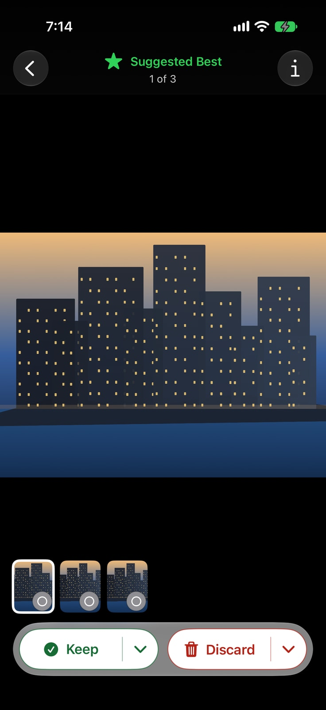
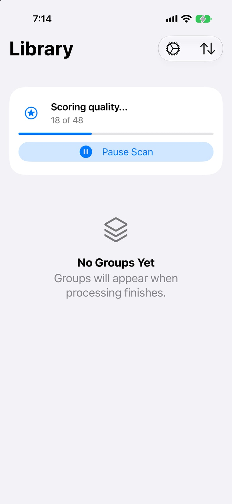
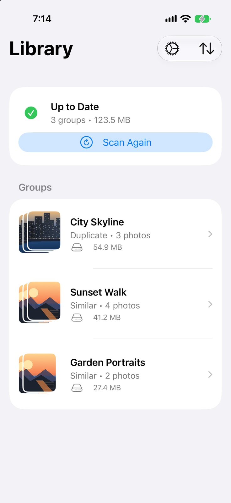

More keepers.
Less clutter.
Find duplicates and look-alikes, then choose what stays.
Join TestFlightBeta for iPhone and iPad
From clutter to keepers.


Your photos stay yours.
Everything runs on your device. Photos are deleted only after you confirm.
Read our privacy policyQuestions?
Does PhotoTidy upload my photos?
No. PhotoTidy analyzes your library on your device, without uploading photos or metadata.
Will it delete photos automatically?
No. You choose what to keep or discard in Compare, then confirm deletion with the system prompt.
What about photos in iCloud?
Scanning uses local photos by default. You can allow iCloud downloads for scanning in Settings.
Can I try it without photo access?
Yes. Demo mode lets you explore the app before granting access to your photos.